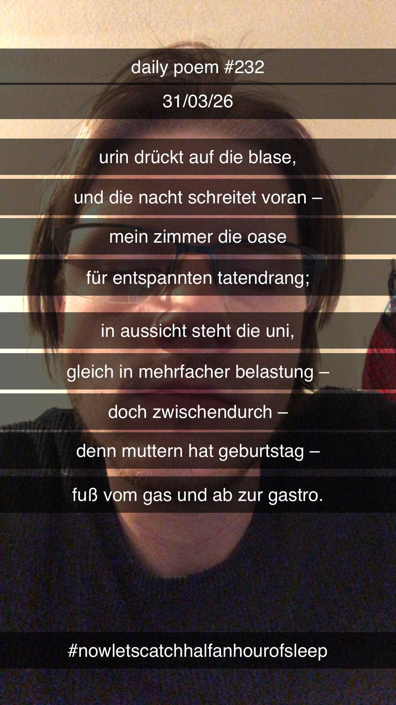

O Gott, es ist längst morgen
[232]Urin drückt auf die Blase,
Und die Nacht schreitet voran –
Mein Zimmer die Oase
Für entspannten Tatendrang;
In Aussicht steht die Uni,
Gleich in mehrfacher Belastung –
Doch zwischendurch –
Denn Muttern hat Geburtstag –
Fuß vom Gas und ab zur Gastro.
